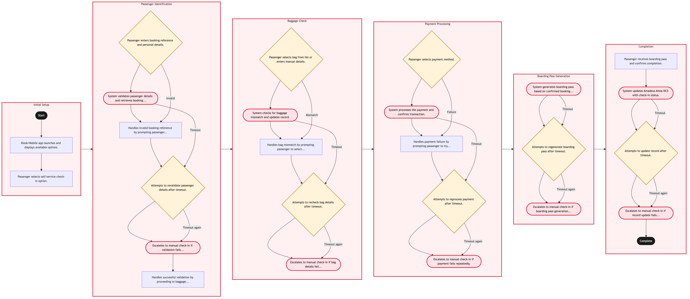

Updated 2026-08-21
Kiosk and Mobile Self Service Check In
Process flow
Click to zoom

Process steps
▼
Phase 1 — Initial Setup
2 steps
| Step | Activity | Role | System | Input | Output | KPI | Dec | Exc | Pain point |
|---|---|---|---|---|---|---|---|---|---|
| 1.1 | Kiosk/Mobile app launches and displays available options. | Passenger | CUPPSC | None | User interface with check-in options | 98% of users access the kiosk/moblie app within 5 seconds | N | N | Slow network connection can delay app launch. |
| 1.2 | Passenger selects self-service check-in option. | Passenger | CUPPSC | User selection | Check-in flow begins | 95% of users select self-service within 30 seconds | N | N | App crashes due to system overload. |
▼
Phase 2 — Passenger Identification
6 steps
| Step | Activity | Role | System | Input | Output | KPI | Dec | Exc | Pain point |
|---|---|---|---|---|---|---|---|---|---|
| 2.1 | Passenger enters booking reference and personal details. | Passenger | CUPPSC | Booking reference, name, date of birth | Validation results | 90% of data entries are correct on first attempt | Y | N | Incorrect booking reference can lead to validation errors. |
| 2.2 | System validates passenger details and retrieves booking information. | CUPPS Agent | Amadeus Altea DCSA | Passenger details | Booking confirmation | 85% of validations complete within 10 seconds | N | Y | Slow response from Amadeus Altea DCS can delay validation. |
| 2.3 | Handles invalid booking reference by prompting passenger to try again. | CUPPS Agent | CUPPSC | User input | Corrected booking information | 90% of passengers correct their booking references within 2 attempts | N | N | Passengers may become frustrated with multiple entry attempts. |
| 2.4 | Attempts to revalidate passenger details after timeout. | CUPPS Agent | Amadeus Altea DCSA | Passenger details | Booking confirmation | 80% of retries succeed within 1 minute | Y | N | Multiple timeouts can cause delays for passengers. |
| 2.5 | Escalates to manual check-in if validation fails repeatedly. | CUPPS Agent | Amadeus Altea DCSA | Passenger details | Manual check-in initiated | 95% of escalations are handled within 3 minutes | N | Y | Manual check-in can be slow and requires additional staff. |
| 2.6 | Handles successful validation by proceeding to baggage check. | CUPPS Agent | Amadeus Altea DCSA | Booking confirmation | Baggage details | 98% of passengers proceed without issues | N | N | No specific pain point. |
▼
Phase 3 — Baggage Check
5 steps
| Step | Activity | Role | System | Input | Output | KPI | Dec | Exc | Pain point |
|---|---|---|---|---|---|---|---|---|---|
| 3.1 | Passenger selects bag from list or enters manual details. | Passenger | CUPPSC | Bag details | Bag information updated | 90% of bags are correctly identified on first attempt | Y | N | Incorrect bag details can lead to mismatches. |
| 3.2 | System checks for baggage mismatch and updates record. | CUPPS Agent | Baggage Reconciliation SystemC | Bag details, passenger information | Updated record | 95% of mismatches resolved within 10 seconds | N | Y | Slow response from Baggage Reconciliation System can delay resolution. |
| 3.3 | Handles bag mismatch by prompting passenger to select correct bag. | CUPPS Agent | CUPPSC | User input | Corrected bag information | 85% of mismatches corrected within 2 attempts | N | N | Passengers may become frustrated with multiple selection attempts. |
| 3.4 | Attempts to recheck bag details after timeout. | CUPPS Agent | Baggage Reconciliation SystemC | Bag details, passenger information | Updated record | 80% of retries succeed within 1 minute | Y | N | Multiple timeouts can cause delays for passengers. |
| 3.5 | Escalates to manual check-in if bag details fail repeatedly. | CUPPS Agent | Baggage Reconciliation SystemC | Bag details, passenger information | Manual check-in initiated | 95% of escalations are handled within 3 minutes | N | Y | Manual check-in can be slow and requires additional staff. |
▼
Phase 4 — Payment Processing
5 steps
| Step | Activity | Role | System | Input | Output | KPI | Dec | Exc | Pain point |
|---|---|---|---|---|---|---|---|---|---|
| 4.1 | Passenger selects payment method. | Passenger | CUPPSC | Payment method selection | Payment confirmation | 90% of payments are completed within 30 seconds | Y | N | Incorrect payment information can lead to payment failure. |
| 4.2 | System processes the payment and confirms transaction. | CUPPS Agent | Payment GatewayU | Payment details | Transaction confirmation | 95% of payments are processed within 10 seconds | N | Y | Slow response from Payment Gateway can delay transaction processing. |
| 4.3 | Handles payment failure by prompting passenger to try again or select another method. | CUPPS Agent | CUPPSC | User input | Corrected payment details | 85% of failed payments are corrected within 2 attempts | N | N | Passengers may become frustrated with multiple payment attempts. |
| 4.4 | Attempts to reprocess payment after timeout. | CUPPS Agent | Payment GatewayU | Payment details | Transaction confirmation | 80% of retries succeed within 1 minute | Y | N | Multiple timeouts can cause delays for passengers. |
| 4.5 | Escalates to manual check-in if payment fails repeatedly. | CUPPS Agent | Payment GatewayU | Payment details | Manual check-in initiated | 95% of escalations are handled within 3 minutes | N | Y | Manual check-in can be slow and requires additional staff. |
▼
Phase 5 — Boarding Pass Generation
3 steps
| Step | Activity | Role | System | Input | Output | KPI | Dec | Exc | Pain point |
|---|---|---|---|---|---|---|---|---|---|
| 5.1 | System generates boarding pass based on confirmed booking and payment. | CUPPS Agent | Amadeus Altea DCSA | Booking confirmation, payment details | Boarding pass | 98% of boarding passes are generated within 5 seconds | N | Y | Slow response from Amadeus Altea DCS can delay boarding pass generation. |
| 5.2 | Attempts to regenerate boarding pass after timeout. | CUPPS Agent | Amadeus Altea DCSA | Booking confirmation, payment details | Boarding pass | 80% of retries succeed within 1 minute | Y | N | Multiple timeouts can cause delays for passengers. |
| 5.3 | Escalates to manual check-in if boarding pass generation fails repeatedly. | CUPPS Agent | Amadeus Altea DCSA | Booking confirmation, payment details | Manual check-in initiated | 95% of escalations are handled within 3 minutes | N | Y | Manual check-in can be slow and requires additional staff. |
▼
Phase 6 — Completion
4 steps
| Step | Activity | Role | System | Input | Output | KPI | Dec | Exc | Pain point |
|---|---|---|---|---|---|---|---|---|---|
| 6.1 | Passenger receives boarding pass and confirms completion. | Passenger | CUPPSC | Boarding pass confirmation | Check-in complete | 95% of passengers confirm within 30 seconds | N | N | No specific pain point. |
| 6.2 | System updates Amadeus Altea DCS with check-in status. | CUPPS Agent | Amadeus Altea DCSA | Booking confirmation, check-in status | Updated record | 98% of updates are completed within 5 seconds | N | Y | Slow response from Amadeus Altea DCS can delay system updates. |
| 6.3 | Attempts to update record after timeout. | CUPPS Agent | Amadeus Altea DCSA | Booking confirmation, check-in status | Updated record | 80% of retries succeed within 1 minute | Y | N | Multiple timeouts can cause delays for passengers. |
| 6.4 | Escalates to manual check-in if record update fails repeatedly. | CUPPS Agent | Amadeus Altea DCSA | Booking confirmation, check-in status | Manual check-in initiated | 95% of escalations are handled within 3 minutes | N | Y | Manual check-in can be slow and requires additional staff. |
Swim lanes
Passenger1.1 1.2 2.1 3.1 4.1 6.1
CUPPS Agent2.2 2.3 2.4 2.5 2.6 3.2 3.3 3.4 3.5 4.2 4.3 4.4 4.5 5.1 5.2 5.3 6.2 6.3 6.4
Systems touched
CUPPSCAmadeus Altea DCSABaggage Reconciliation SystemCPayment GatewayU
Key performance indicators
- 98% of users access the kiosk/moblie app within 5 seconds
- 95% of users select self-service within 30 seconds
- 90% of data entries are correct on first attempt
- 85% of validations complete within 10 seconds
- 90% of passengers proceed without issues
Risks and control points
- System outages affecting Amadeus Altea DCS and CUPPS systems, leading to manual check-in fallback.
- Slow response times from integrated systems causing delays for passengers.
- Incorrect data entries leading to validation errors or bag mismatches.
- Payment failures requiring multiple attempts, increasing passenger frustration.
- Delays in boarding pass generation due to system timeouts.
Air Canada Process Wiki — process and systems reference compiled from public sources
for IT Application Management and User Support pre-sales discovery.
Built 2026-08-21. Every system carries an evidence tier: tier C is an industry pattern and tier U is an open
question, and neither should be asserted as fact about Air Canada without confirmation in discovery.
Not affiliated with or endorsed by Air Canada. Air Canada, Aeroplan and Altitude are trademarks of Air Canada.